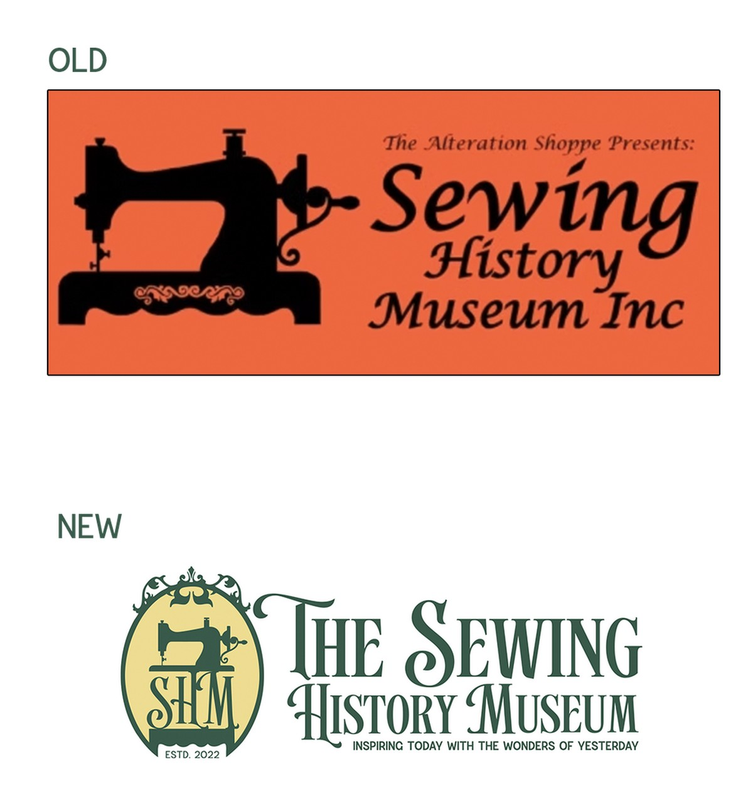
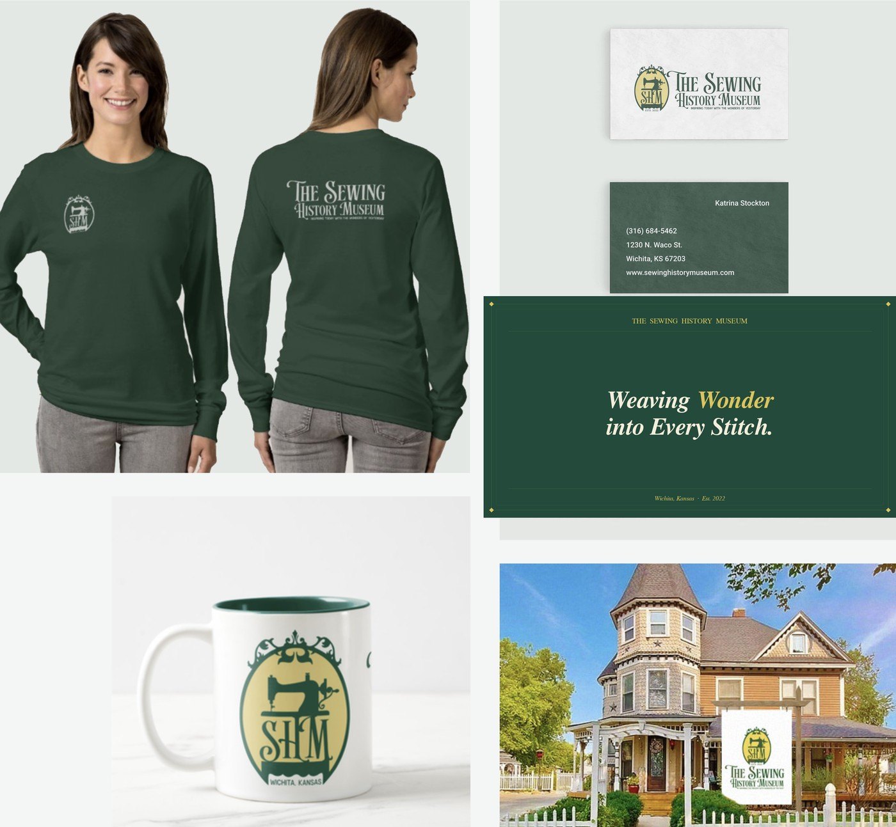

The Sewing History Museum is a one-of-a-kind institution nestled in a beautiful Victorian house in midtown Wichita. Three years after opening, organic foot traffic had waned — and the brand wasn't pulling its weight. The goal: a full visual and messaging overhaul that honors the museum's history while building national awareness.
That meant shedding the rustic orange (a little too close to that famous sewing machine brand from the 1800s), finding a voice that's both knowledgeable and genuinely warm, and building out every touchpoint from logo to merch to social strategy.

The old mark — orange, rustic, heavy — was practically waving a Singer flag. The new identity needed to feel Victorian without feeling dated, distinctly Kansan without feeling regional, and warm without feeling generic. Every element of the redesign was a deliberate departure.

From business cards to merch to the sign in front of the Victorian house itself — every touchpoint was developed to feel cohesive, polished, and period-appropriate. The green and gold system holds beautifully across both apparel and print.
Business cards carry the clean white front / forest green back split. The ceramic mug puts the full emblem center stage. The long sleeve — a forest green billboard with the wordmark across the back — turned out sharp.

The brand driver — a single word that anchors every communication decision. Not nostalgia, not history, not craft. Wonder. It's the feeling you get when you see a 150-year-old machine still running. It's what the museum promises.